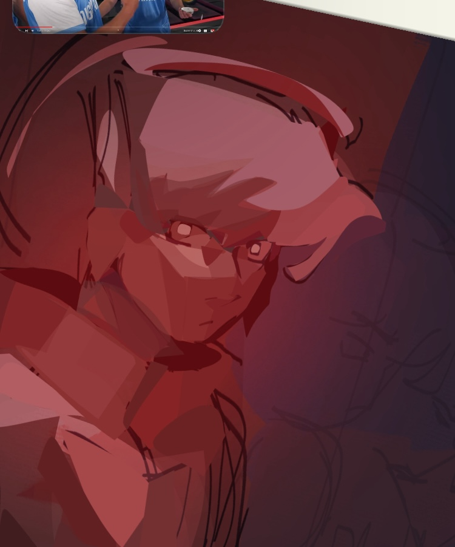

cage room
creation date: july-aug 29
characters featured: enzo
this artwork was based off a quote that i hate, so it was made out of spite pretty much. i tried elaborating on what it means to me but i can't find a way to word it in a way where it does NOT sound like extreme cope. you can figure out the pieces maybe. i make it sound really intense here but it's not. kinda just wanted to draw a thousand-yard-stare tbh.
the art itself is not to my liking here, i had a grand plan and it was meant to be a lot more elaborate and rendered but halfway through i lost interest. oops.
alt and wips:

